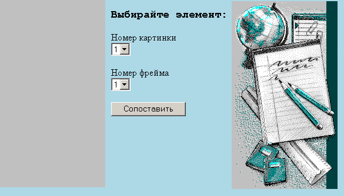

Лабораторные задания по курсу "Введение в Интернет"
|
фрейм [1] - высотой 320 пикселей, фрейм [2] - "все остальное". |
фрейм [1.1] - шириной 180 пикселей, фрейм [1.2] - шириной 250 пикселей, фрейм [1.3] - "все остальное". |
3 шаг
| w1 | w2 |
|---|---|
| w3 | w4 |
В команде <FRAMESET> задайте атрибуты FRAMEBORDER=no, BORDER=0, FRAMESPACING=0, а в команде <FRAME> - MARGINHEIGHT=0, MARGINWIDTH=0, SCROLLING=no.
Сделайте так, чтобы при наведении мышки на каждый фрейм появлялась надпись, содержащая номер этого фрейма (для этого нужно создать htm-файлы, в которых использовать файл r0.gif).
4 шаг
Во фрейме [1.3] соберите мозаику из картинок из лабораторной 2.3.
Для того, чтобы между картинками не было промежутков, в команде <TABLE> задайте атрибуты BORDER=0, CELLSPACING=0, CELLPADDING=0
Сделайте так, чтобы при наведении мышки на каждый элемент собранной мозаики появлялась надпись, содержащая имя соответствующего файла - рядом с указателем мышки, и такая же надпись в статусной строке браузера. Для этого нужно использовать команду задания гиперссылки следующего вида
<a href="javascript:void(0)" onMouseOver="window.status='текст';return true">
javascript:void(0) - чтобы по гиперссылке ничего не открывалось
"window.status='текст';return true" - тот текст, который будет выведен в статусной строке браузера.
Автоматизируйте сборку мозаики во фрейме [1.1]. Для этого во фрейме [1.2] создайте форму и сделайте так, чтобы в форме
Здесь в элементе формы <INPUT TYPE="button"> нужно использовать обработчик событий OnClick="window.open(что,куда)">, где что и куда имеют вид:
this.form.name.value
this.form - "эта форма", т.к. она у нас одна
name - имя соответствующего элемента SELECT
value - сюда будет подставлено значение выбранного элемента в SELECT'е при обработке формы обработчиком событий OnClick.
Это должно выглядеть так:
